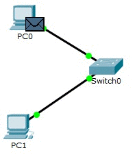
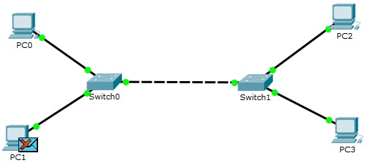
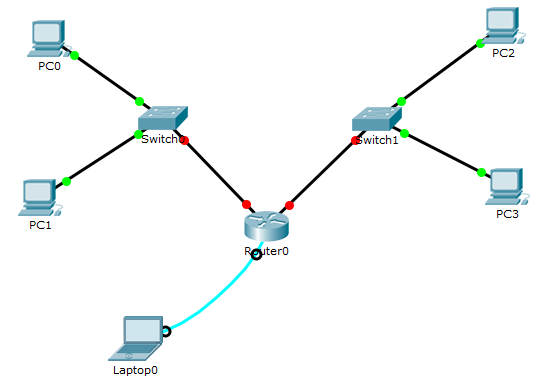
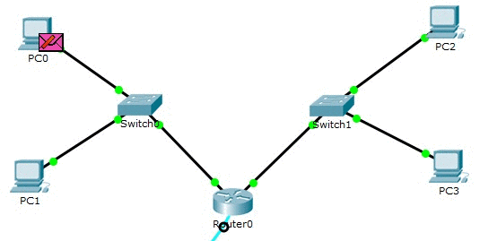
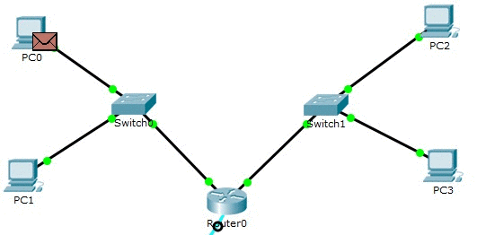
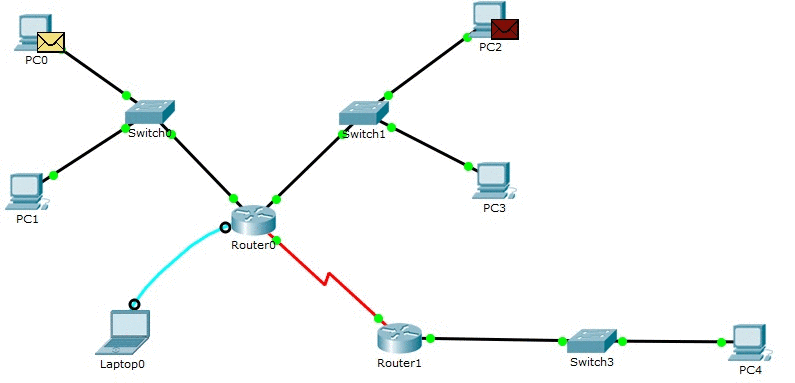
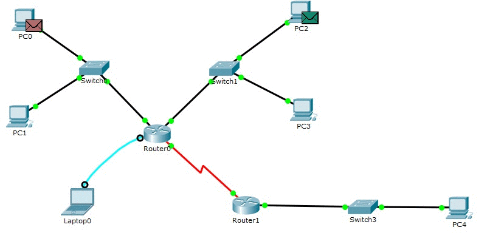

Интернет-технологии
Курс данного предмета предусматривает выполнение трёх лабораторных работ:
- Экосистема разработки программ с открытым кодом
- Настройка локальной сети передачи данных
- Разработка простого веб-приложения
Курс данного предмета предусматривает выполнение трёх лабораторных работ:
Цель: Спроектировать и разработать коллективное веб-приложение.
| Участник | Персональная страница | Роль |
| Бабенко Евгения | Персональная страница | Руководитель проекта |
| Жуков Игорь | Персональная страница | Разработчик |
Приложение решает краевую задачу для уравнения теплопроводности в одномерном пространстве.
Целью данной лабораторной работы является ознакомление с принципами работы компьютерных сетей, базовой настройкой сетевого оборудования и статической маршрузитацией.
Для начала выполнения лабораторной работы необходимо рассчитать диапазоны подсетей.
| Номер варианта | Количество узлов в сети | |||
| LAN A | LAN B | LAN C | ||
| 15 | 854 | 14 | 169 | |
| Префиксная маска подсети | /22 | /28 | /24 | |
| Адрес подсети | 192.168.12.0/22 | 172.16.15.0/28 | 10.10.15.0/24 | |
| Минимальный адрес | 192.168.12.1 | 172.16.15.1 | 10.10.15.1 | |
| Максимальный адрес | 192.168.15.254 | 172.16.15.14 | 10.10.15.254 | |
| Широковещательный адрес | 192.168.15.255 | 172.16.15.15 | 10.10.15.255 | |
Для рассчитаных подсетей нужно распределить адреса устройствам.
| Устройство | IP-адрес | Маска подсети | Шлюз по умолчанию |
| PC0 | 192.168.15.254 | 255.255.252.0 | 192.168.12.1 |
| PC1 | 192.168.15.253 | 255.255.252.0 | 192.168.12.1 |
| PC2 | 172.16.15.14 | 255.255.255.240 | 172.16.15.1 |
| PC3 | 172.16.15.13 | 255.255.255.240 | 172.15.15.1 |
| PC4 | 10.10.15.254 | 255.255.255.0 | 10.10.15.1 |
| Router0 FastEthernet 0/0 | 192.168.15.1 | 255.255.252.0 | - |
| Router0 FastEthernet 0/1 | 172.16.15.1 | 255.255.255.240 | - |
| Router0 Serial 2/0 | 15.15.15.2 | 255.255.255.252 | - |
| Router1 FastEthernet 0/1 | 10.10.15.1 | 255.255.255.0 | - |
| Router1 Serial 2/0 | 15.15.15.1 | 255.255.255.252 | - |
После добавления на форму двух компьютеров и коммутатора, а так же их настройки, необходимо проверить отправление пакетов с устройства на устройство.
При добавлении на форму ещё двух компьютеров, настроенных для подсети B, подключенных к общему коммутатору, необходимо проверить работоспособность сети. В данном варианте пакеты между устройствами, находящимися в разных сетях ходить не будут, т.к. коммутаторы находятся на 2 уровне модели OSI и не умеют обрабатывать IP-запросы
После того как на форму добавлен маршрутизатор и произведена его настройка, необходимо отправить пакеты из одной сети в другую.
Так как у компьютеров не указан шлюз по умолчанию, то устройство, при направлении пакета, предназначенного устройству из другой сети, не знает кому передавать свой запрос.
Для того, чтобы между устройствами из разных сетей ходили пакеты, необходимо прописать адреса интерфейсов роутера как шлюзы по умолчанию.
После добавления, подключения и настройки компьютера, коммутатора и маршрутизатора, необходимо проверить возможность передачи данных между сетями. Так как маршрутизатор 1 не знает о сетях маршрутизатора 2, а маршрутизатор 2 не знает о сетях маршрутизатора 1, пакеты между этими маршрутизаторами не ходят.
Для передачи между маршрутизаторами данных необходимо прописать статическую маршрутизацию сетей между этими двумя маршрутизаторами.
Выберите одно верное утверждение.
Рефакторинг – это: